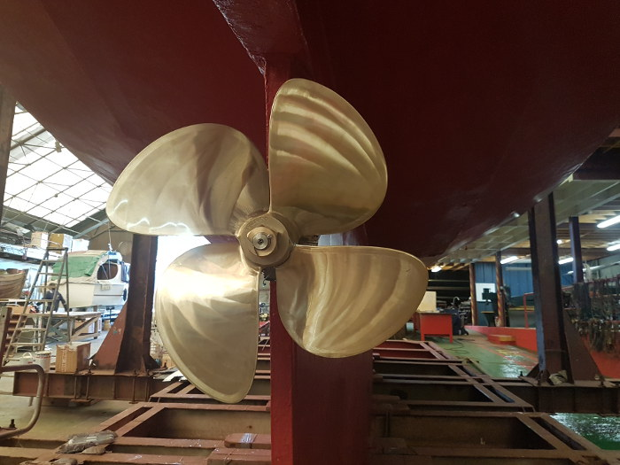
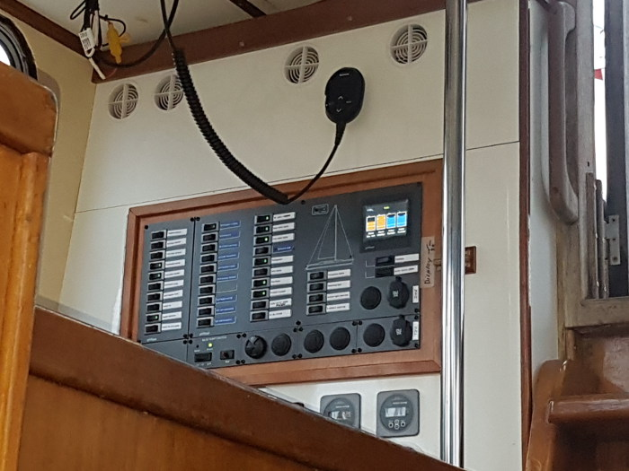

Sailing Yacht CORRYVRECKAN
The yacht is named after the gulf of Corryvreckan between the islands of Scarba and Jura, known for its very famous tide race, the whirlpool and the numerous legends about it. The yacht sails under the Swiss flag. She was purchased by the association in 2018. CORRYVRECKAN was built in 1990 to a high specification especially for cruises on the West Coast of Scotland. The previous owners, Chris & Von Lindesay, made her one of the most famous charter yachts in these waters. We will do our best to continue the tradition, creating wonderful sailing holidays for a hopefully increasing number of members. Built in steel as a Suncoast 60 with a ketch rig, 19 m in length and 5.00 m in beam, there is comfortable accommodation for up to 10 persons. A displacement of 44 tons gives stability; the water tank of 2000 litres and the 1200 litres diesel tank offer the possibility of long range cruises. Heating systems, 3 bathrooms and a large cockpit contribute to make CORRYVERCKAN a real ship. A large saloon with a well equipped galley, a protected deckhouse and 6 double cabins give an enthusiastic crew the opportunity to explore the Hebrides in comfort and have a fabulous sailing experience.

In 2019 SY Corryvreckan was refitted with a new engine, a new generator, new heating systems and a complete new set of navigation instruments besides the regular maintenance work.
